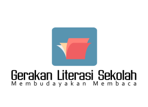
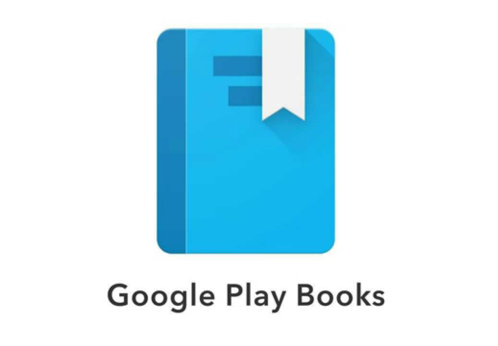

Apa itu literasi?
Literasi merupakan suatu kegiatan yang mencerminkan kecintaan terhadap sesuatu yang bisa meningkatkan kemampuan atau skill seseorang. Baik itu dengan membaca, menulis, menghitung, atau bahkan melakukan kegiatan seperti mempraktekkan gerakan olahraga.
Mengapa literasi itu penting ?
Seseorang yang sudah memiliki kecintaan terhadap kegiatan literasi cenderung suka untuk menggali potensi dalam dirinya. Dengan begitu, ia akan terus belajar, belajar dan belajar untuk mengembangkan ilmu atau suatu hal yang ia suka. Ia akan melakukannya dengan senang hati. Mengapa? Karena rasa cintanya terhadap suatu hal tersebut. Maka, jika kalian sudah bisa menumbuhan sikap cinta terhadap kegiatan literasi, secara tidak langsung akan membuat diri kalian berkembang dengan apa yang kalian sukai.
Pada zaman yang serba canggih ini, literasi bisa menjadi kegiatan yang sangat penting. Terutama bagi para pelajar dan mahasiswa. Apalagi pada kondisi pandemi seperti sekarang ini. Hampir seluruh sekolah di Indonesia melaksanan pembelajaran secara daring. Bagi beberapa orang yang kurang paham terhadap teknologi hal ini tentu saja akan menyulitkan bukan?. Maka dari itu perlu yang untuk mencari tau untuk mengatasinya. Itulah yang disebut dengan kegiatan literasi.
Bagaimana cara menumbuhkan kecintaan terhadap literasi ?
Literasi tidak selalu dengan kegiatan membaca atau mempelajari ilmu pengetahuan saja. Literasi juga dapat berupa membaca hiburan, seperti novel, berita, dongeng, ataupun yang lainnya. Jika kita masih berada di tahap awal pengembangan literasi, kita bisa memulainya dengan bacaan bacaan ringan seperti contoh di atas. Hal ini bertujuan agar kita terbiasa. Mungkin di awal akan terasa membosankan, tapi lama kelamaan akan menjadi mengasyikan, dan bahkan bisa dijadikan hobi baru.
Di bawah ini adalah beberapa contoh aplikasi yang dapat Anda guanakan untuk memulai kegiatan literasi.
1. Wattpad
Aplikasi ini berisi kumpulan novel karangan dari para pengguna wattpad sendiri. Kalian bisa gunakan aplikasi ini untuk membaca dan menulis cerita karangan kita sendiri. Aplikasi ini bisa kita unduh di Apps Store maupun Google Playstore. Wattpad juga tersedia versi webnya. Sangat mudah di akses bukan?

2. Buku Sekolah Digital (BSD)
Aplikasi ini memiliki ribuan buku elektronik. Mulai dari kurikulum 2006 sampai kurikulum 2013 bahkan ebook dari buku-buku umum juga ada lho. Dan yang terpenting, aplikasi ini GRATIS. Jadi, kamu tinggal unduh saja materinya, terus bisa kamu baca deh secara offline.
3. Google Play Book
Aplikasi ini gratis dan bebas di unduh oleh para pengguna Android. Aplikasi ini memiliki banyak sekali buku yang 70% di antaranya adalah gratis. Jadi tidak perlu untuk berlangganan untuk mengakses aplikasi ini.
Nah, teman teman itu tadi adalah sedikit ulasan mengenai Literasi yang saya susun sendiri. Mohon maaf bila ada kesalahan dalam pengetikan. Semoga artikel ini bermanfaat.
--- Terimakasih ---